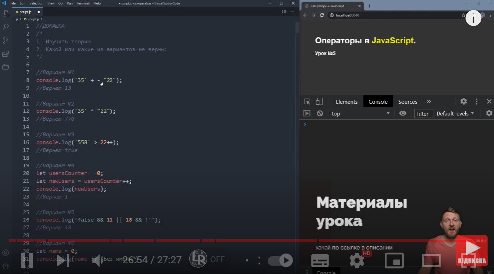
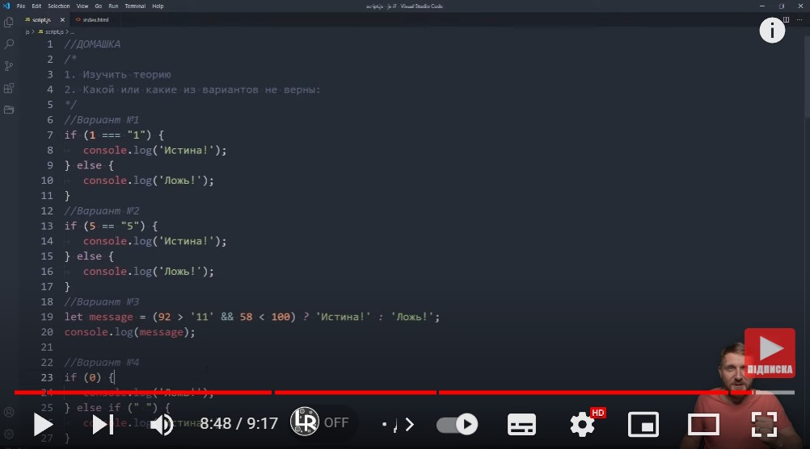
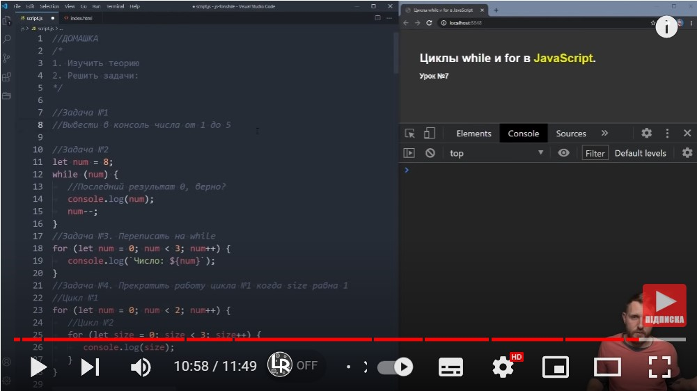
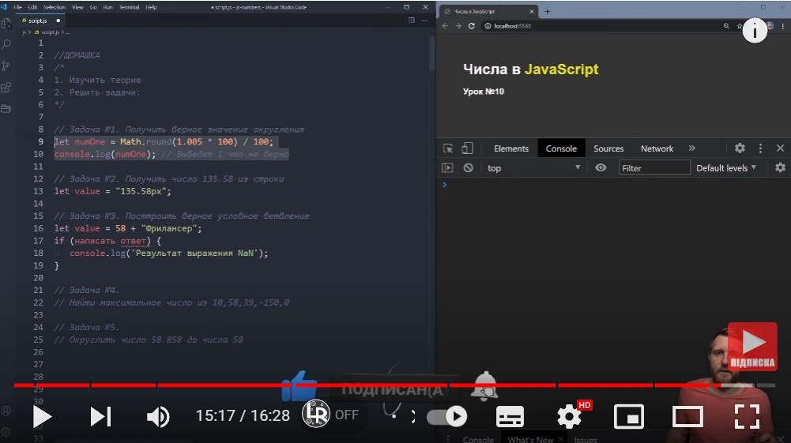
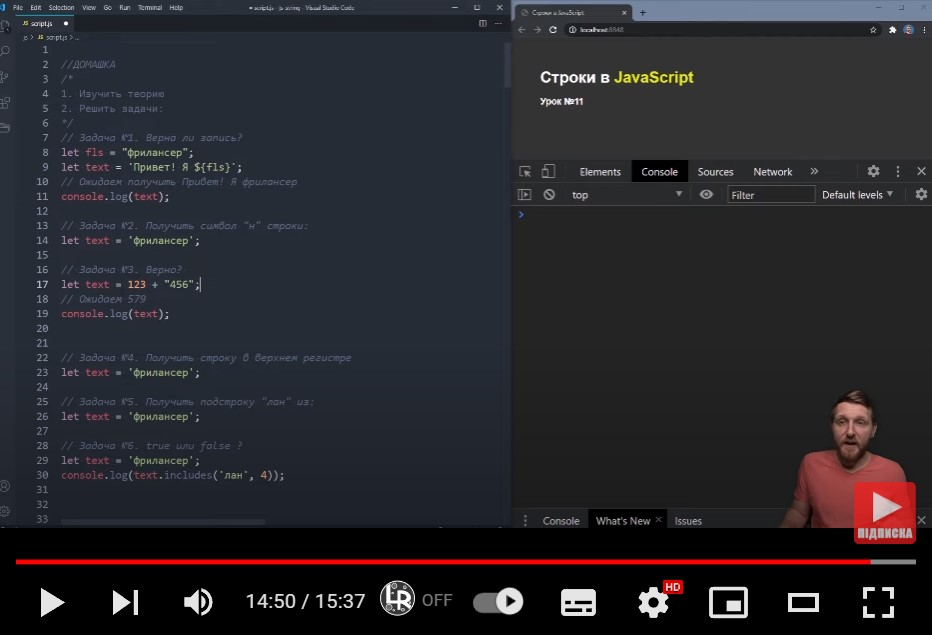

Домашня робота №23 JAVASCRIPT
Домашка №1 Операторы JAVASCRIPT. "2"+2=22. Уроки JAVASCRIPT с нуля 2020
Варіант №1
console.log('35' + - "22");
Поверне 13.
Відповідь: НЕ ВІРНО. Поверне "35-23".
Варіант №2
console.log('35' * "22");
Поверне 770.
Відповідь: ВІРНО.
Варіант №3
console.log('558' > 22++);
Поверне true.
Відповідь: НЕ ВІРНО. Поверне помилку. Інкремент використовується лише зі змінними.
Варіант №4
let userCounter = 0;
let newUsers = userCounter++;
console.log(newUsers);
Поверне 1.
Відповідь: НЕ ВІРНО. Поверне 0. Інкремент написаний суфіксним записом. При такому записі видає першочергове значення.
Варіант №5
console.log(!false && 11 || 18 && !'');
Поверне 18
ідповідь: НЕ ВІРНО. Поверне 11.
Варіант №6
let name = 0;
console.log(name ?? "Без імені")
Відповідь: НЕ ВІРНО. Поверне 0. В кінці відсутня крапка з комою. Оператора ?? немає.
Домашка №2 IF ELSE в JAVASCRIPT. Условный оператор "?". Примеры IF ELSE. Уроки JAVASCRIPT с нуля 2020
Варінт 1
if (1 === "1") {
console.log('True!');
} else {
console.log('False!');
}
Відповідь: Поверне False!
Варінт 2
if (5 == "5") {
console.log('True!');
} else {
console.log('False!');
}
Відповідь: Поверне True!.
Варінт 3
let message = (92 > '11' && 58 < 100) ? 'True!' : 'False!';
console.log(message);
Відповідь: Поверне True!.
Варінт 4
if (0) {
console.log('False!');
} else if (" ") {
console.log('True!');
}
Відповідь: Поверне True!.
Домашка №3 Циклы FOR и WHILE в JavaScript. Директивы break и continue. Уроки JAVASCRIPT с нуля 2020
Задача №1
Вивести в консоль цифри від 1 до 5 всіма можливим способами.
// while
let num = 1;
while (num < 6) {
console.log(num);
num++;
}
// do ... while
let numOne = 1;
do {
console.log(numOne);
numOne++;
} while (numOne < 6);
// for
for (let num = 1; num < 6; num++){
console.log(num);
}
Задача №2
Останній результат 0, вірно?
let numTwo = 8;
while (numTwo) {
console.log(numTwo);
numTwo--;
}
Відповідь: НЕ ВІРНО. Останній результат 1.
Задача №3
Переписати на while
let numThree = 0;
while (numThree < 3) {
console.log(`Число: ${numThree}`);
numThree++;
}
Задача №4
Зупинити роботу циклу №1 коли size дорівнює 1
//Цикл №1
circleOne: for (let num = 0; num < 2; num++) {
//цикл №2r
for (let size = 0; size < 3; size++) {
if (size == 1) {
break circleOne;
}
console.log(size);
}
}
Домашка № 4 Числа в JAVASCRIPT. Тип данных number. Работа с числами. проблема неточных вычислений.
Задача №1
Отримати вірне значення округлення
let someNum = 1.005 + Number.EPSILON;
let numberOne = Math.round(someNum* 100) / 100;
console.log(numberOne);
Відповідь: після додавання Number.EPSILON поверне число 1.01.
Задача №2
Отримати число 135.58 з строки
let value = "135.58px";
console.log(parseFloat(value));
Відповідь: використовуємо для цього parseFloat(value).
Задача №3
Побудувати вірну умову розгалуження
let valueOne = 58 + "Фрілансер";
if (isNaN(valueOne)) {
console.log('Результат виразу NaN');
}
Відповідь: використовуємо перевірку isNaN.
Задача №4
Знайти максимальне число з 10, 58, 39, -150, 0
console.log(Math.max(10, 58, 39, -150, 0));
Відповідь: використовуємо матиматичну функцію Math.max().
Задача №5
Округлити число 58.858 до чила 58
console.log(Math.floor(58.858));
Відповідь: використовуємо матиматичну функцію Math.floor().
Домашка № 5 Строки в JAVASCRIPT. Тип данных string. Типы кавычек, поиск, регистр и получение подстроки.
Задача №1
Чи вірний запис? Очікується відповідь Привіт! Я фрілансер
let fls = "фрілансер";
let text = 'Привіт! Я ${fls}';
console.log(text);
Відповідь: запис не вірний. Використані не зворотні лапки.
Задача №2
Отримати символ "н" строки
let textOne = 'фрілансер';
console.log(textOne[5]);
Відповідь: використовуємо квадратні дужки та порядковий номер букви у строці.
Задача №3
Вірно? очікуємо на 579
let textTwo = 123 + "456";
console.log(textTwo);
Відповідь: не вірно. Результат 123456.
Задача №4
Отримати строку у верхньому регістрі
let textThree = 'фрілансер';
console.log(textThree.toLocaleUpperCase());
Відповідь: використовуємо функцію toLocaleUpperCase().
Задача №5
отримати підстроку 'лан' із
let textFour = 'фрілансер';
console.log(textFour.slice(3, 6));
Відповідь: використовуємо функцію slice().
Задача №6
true чи false?
let textFive = 'фрілансер';
console.log(textFive.includes('лан', 4));
Відповідь: false.